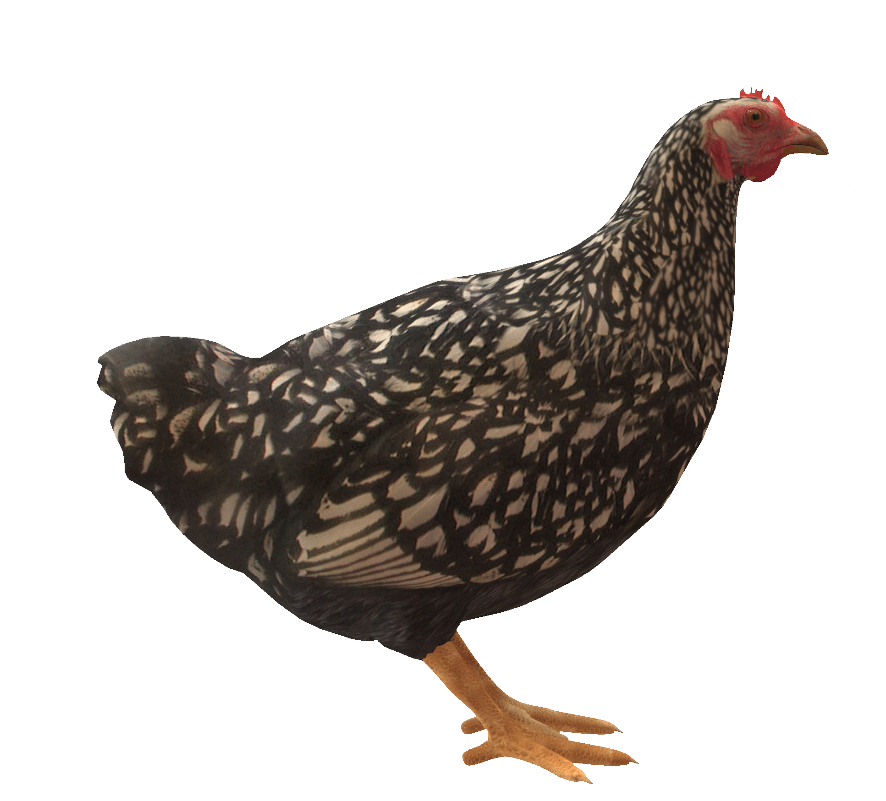
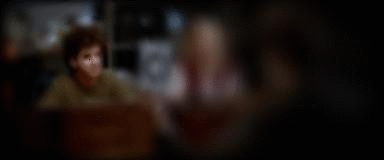

Bournemouth Perception Lab
from Sensing, through active sampling,
to perceptual representations
Perception is an active process: We are interested in how things appear, depending on their physical properties and the way we sample them with our senses.



We use hand tracking and eye tracking to investigate how we sample our environment using our senses; psychophysical methods to measure what people perceive, and machine learning to model the process that bridges sampling and perception. Recently, we have initiated measurements of electroencephalography (EEG) and pupil responses to determine physiological correlates of perceptual experiences. We employ 3D printing and computer graphics to generate lifelike stimuli for our participants as well as for computer simulations.